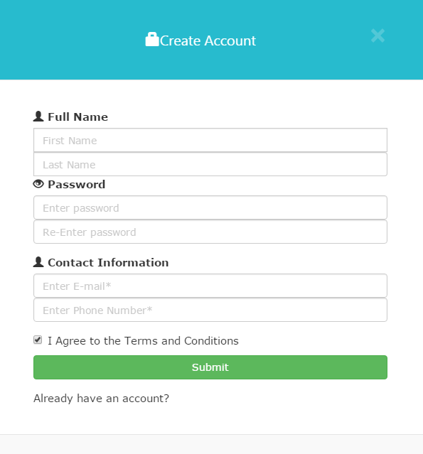
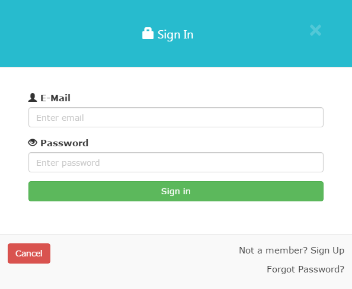
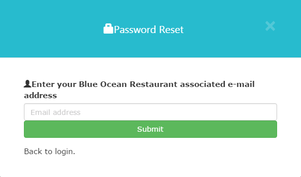
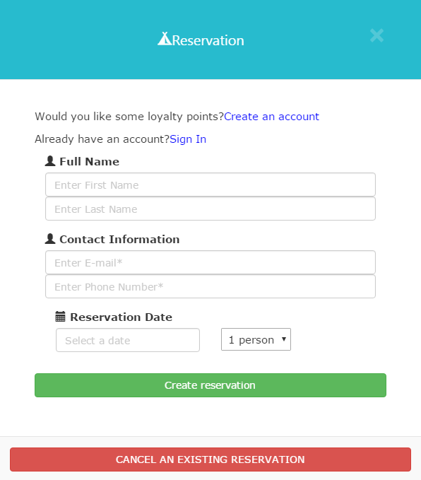
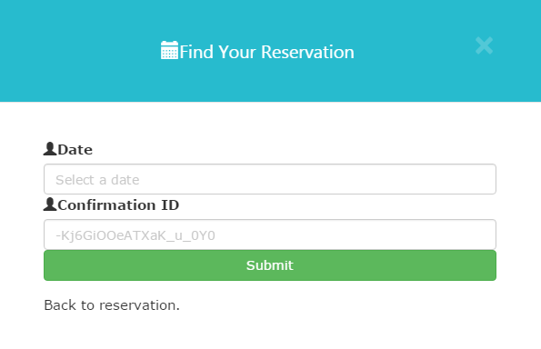
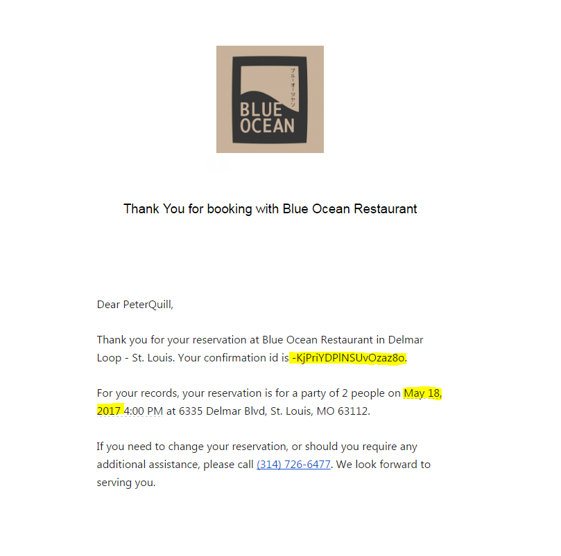
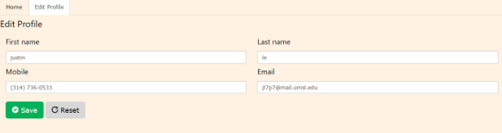
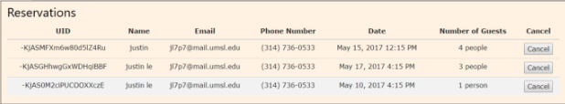

- Click the Sign up button located in the top right corner of the Blue Ocean website.
- A form will appear after clicking the Sign up button. Please fill out all of the required fields.
- Note: You will not be able to create an account without every field filled out.
- Click Create an Account and you will be redirected back to the home page.

If you already have an account with Blue Ocean Restaurant, simply fill out your user email and password.
- Put the email address you used when originally creating your account into the Username box.
- Put in your personally created password in the password box.
- Click Sign in.

- In the Sign-in form, click Forgot Password?
- Type in the email address you used when you first created your account and click submit
- The system will send you an email with a link.
- Upon clicking the link in the email, you will see a form with a field requesting your new password.
- You can then return to the sign-in page and use your email address with the new password.

- Click on the “Reservation” button in the upper right-hand corner of the Blue Ocean Website.
- Fill out the fields marked with a *, these are mandatory. (If you are logged in, the contact fields will be filled in for you.)
- NOTE: If you have already created an account, but are not logged in, click the blue Sign in tab to avoid filling out the name and contact information.
- Select a date and time using the calendar fields near the bottom of the form.
- Choose the number of guests (1-5) in your party using the drop-down menu in the bottom right.
- NOTE: If your reservation is for more than 5 people we request that you call in advance.
- Click the large “Create reservation” button to submit.
- You will see notification on the screen that an email has been sent to you account.
- Check the email account you entered for confirmation.

- From the reservation module. Click on the red button at the bottom that states “Cancel an Existing Reservation”.
- Upon clicking on it you will need to provide some information to locate your reservation.
- Head on over to your email which you’ve used to make a reservation. Locate the date(Month, Day, Year) and your confirmation id(-KjPriYDPINSUvOzaz8o) do not include the period.
- NOTE: If the information you’ve entered matches an alert will popup stating that your reservation has been deleted.
- Upon clicking the link in the email, you will see a form with a field requesting your new password.
- You can then return to the sign-in page and use your email address with the new password.


- After you login with your credentials, choose “account management” from the dropdown menu with your account name on it.
- From here you can see any active reservations in the center of the screen.
- Loyalty points will be displayed in the lower left-hand corner of the screen.
- To edit your name, email, or phone number, click on the tab labelled “Edit Profile.” The fields can be edited on screen.

- After you login with your credentials, choose “account management” from the dropdown menu with your account name on it.
- Any active reservations will be displayed here
- Click the gray “cancel” button next to the reservation you wish to cancel.
